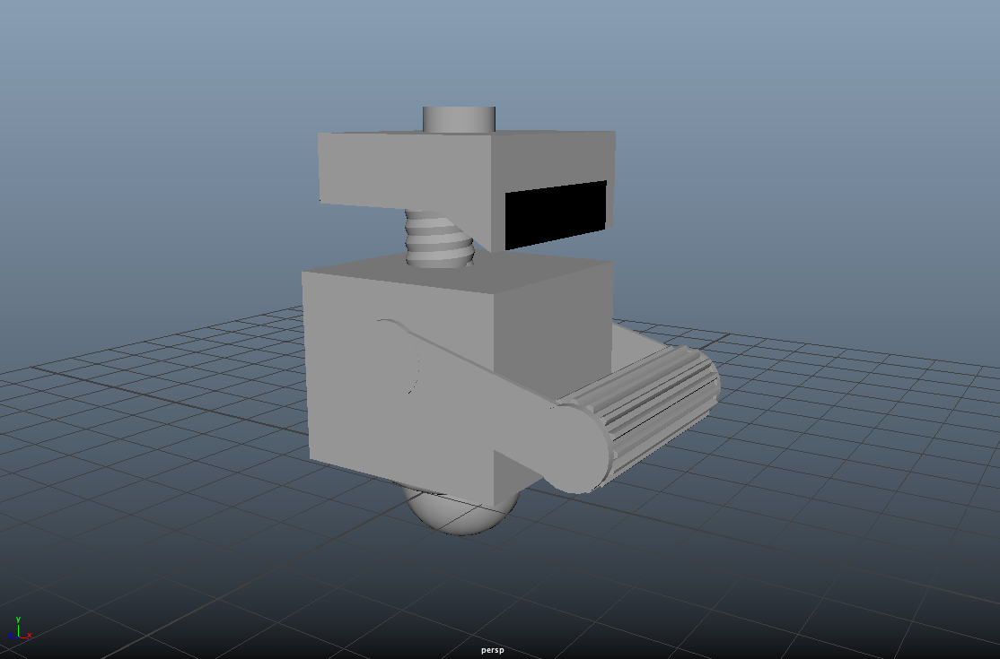
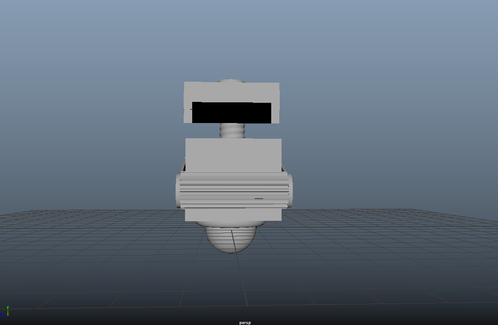
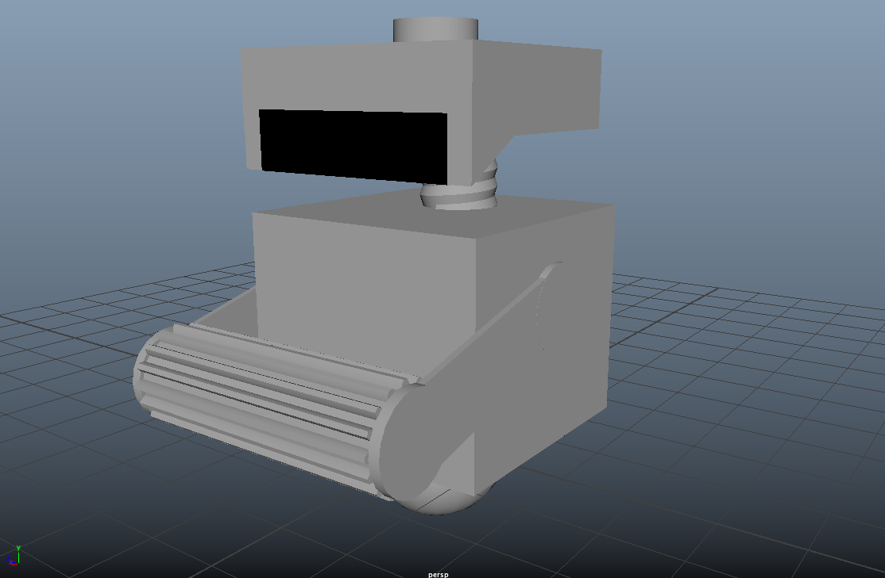
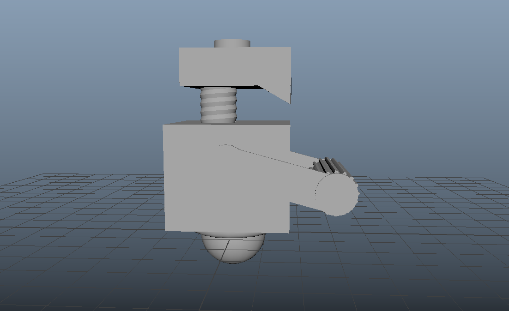

For the first exercise, we were tasked to create a robot using Poly Primitives in Maya. Primitives were only modified by translating, rotating, or scaling. I chose to use the cleaning robot, Mo (pictured above), from the movie Wall-E as my reference.
 To create the basic body, I used a cube primitive. The head was created using three components, cube for the biggest part, a plane for the "face", which is the black part, and a prism that has been rotated at an angle for a "chin." To connect the head and body, I used the helix.
 The "brush" part that is held by the robot, I used a gear primitive that was streched lengthwise.
 The "brush" is connected to the body through the "arms." The arms are composed of three parts: one cube primitive that was scaled to be thin and rectangular. At both ends of the rectangle, are cylinder primitives that are scaled to be thinner, giving a "curved" appearance.
 All of the previously described structure as stacked, on top of the spherical wheel, which is connected to the body through a torus primitive.